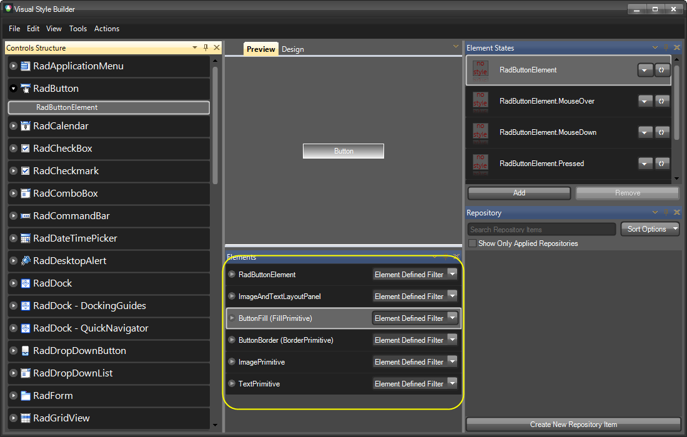
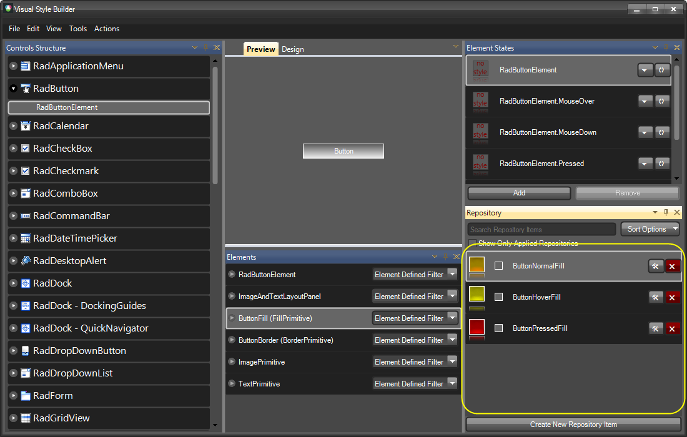
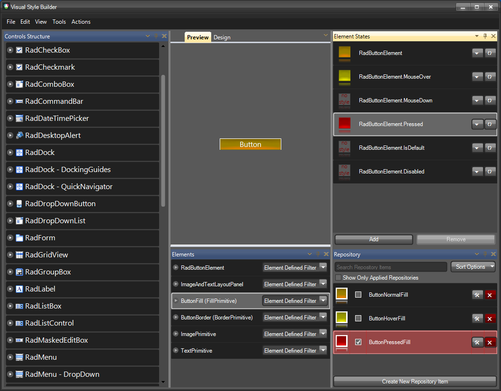

Getting Started
Overview
The purpose of this article is to introduce Telerik WinForms Visual Style Builder by describing the process of creating a simple theme for the RadButton control. This article emphasizes on all tricky moments that might occur while using the Visual Style Builder and explains them so that the user does not experience any issues when theming controls. The tutorial begins with the creation of all needed repository items for styling RadButton control and after that shows how apply them to the control.
Creating a new Theme
Below the Preview part of the form you can see the Elements Grid which displays the currently available elements for the
current tree view selection that can be styled. In general, these are the elements which, once styled, sum up to the final
appearance of the corresponding control. On the image above you can see the RootRadElement currently displayed. When selecting
a control from the tree view on the left, normally its root element is displayed in the elements grid. You can use this element
to apply common styles for the whole control that are inherited throughout the element hierarchy (the hierarchy that begins
from the RootRadElement) like Font, ForeColor etc.
To apply a style to the RootRadElement you can choose two approaches:
Creating a new repository item and applying it
Directly modifying the RootRadElement’s properties from the property grid
In this article we are going to demonstrate how to create and apply a repository item that defines the ForeColor and the Font of the button.
Creating a new Repository Item
For more information or repository items, check the
Theme Repository topic.

This is the Text Repository Item editor dialog. As discussed in the Theme Repository article, each repository item has a unique key and a display name. You can edit these properties by using the corresponding text boxes at the upper part of the form. In this demonstration, the repository item is called ‘WhiteSegoeUI12’. Its key is given the same value.
Note: It is important to give your repository items clear and straightforward names related either to their appearance, or to the cases they are used in. Good repository item names might be:
PressedButtonFill
OrangeLinearFill
TransparentFill
In this way you will be able to quickly associate the repository item with the appearance it will give to the element or the case it is used in (pressed/hovered button etc.).
In our case, the name of the Repository Item is ‘WhiteSegoeUI12’ and, obviously, it describes the settings contained in this item:
Font is set to Segoe UI with size 12
ForeColor is set to White
Note that the property grid on the right shows these properties in bold style which means that their values are explicitly defined in the repository item. Only the explicitly defined values are applied to an element when later associated with the corresponding repository item.
After finishing editing the repository item, you should click on the OK button. The dialog will be closed and the new repository item will be visible in the repository tool window of the main form:
Now, we are going to create a few repository items that will define the styles for the button’s background for its different states. To do this, expand the RadButton node in the tree view on the left and select the RadButtonElement child node. By changing the selection in the tree view, the content of the Elements grid will also be changed with the corresponding elements that can be styled. You will see the most important elements that build the button as shown in the picture below:
Having selected the ButtonFill element in the Elements grid, click on the ‘Create New Repository Item’ button. You will see the Fill Repository Item Editor Dialog that allows you to create different styles of fills. In this dialog, select the ‘Office Glass Rect’ tab and from the combo box with predefined styles, choose ‘Orange’. The dialog should look the following way:
Give the repository item a key and a name as follows: ‘ButtonNormalFill’, ‘ButtonNormalFill‘, and check the ‘Animated State Transition’checkbox to enable animated style transition for this repository item. Save the repository item by clicking OK and click on the ‘Create New Repository Item’ button again. By following the same steps described above, crate another two fill repository items with office glass rect style and colors as follows: yellow and red. Name them ‘ButtonHoverFill’ and ‘ButtonPressedFill’. The repository should look as follows after creating all items:
Now we are going to create a few border repository items which we are going to use later for styling the button. To do this, select the ButtonBorder element in the Elements grid and click on the ‘Create New Repository Item’ button to display the Border Repository Item Editor dialog. In the dialog, give a key and a name for the repository item as follows: ‘ButtonNormalBorder’, ‘ButtonNormalBorder’. Set the ForeColor property to Orange and also the Width property to 2. The dialog should look as follows:
Make sure the "Animated State Transition" checkbox is checked and save the new repository item by clicking on OK.
The repository item will be created and added to the current repository. Now repeat the same steps to create two more
repository items with the following colors: yellow, red. For the yellow repository item define key and name as follows:
"ButtonHoverBorder", "ButtonHoverBorder", and for the red item define key and name as follows: "ButtonPressedBorder",
"ButtonPressedBorder". The repository tool window should look the following way after adding the new items:
Now that we have created all the repository items needed to style our button, we are going to associate them with the corresponding elements for the corresponding states of the button (normal, mouseover, pressed).
We will start with the RootRadElement and will associate the SegoeUI12White repository item with its default. To do so, select the RadButton node in the tree view on the left, find the SegoeUI12White repository item, drag it and drop it on the RootRadElement state shown in the Element States tool window. The repository item style will be applied to the RootRadElement for its default state, and the repository item will be highlighted in red to notify that the item is associated with the selected state as shown on the picture below:
As you can see on the picture, the button has acquired the Segoe UI 12 font and a white forecolor. Now, we are going to style the background of the button for its Normal, MouseOver and Pressed states. To do so, select the RadButtonElement child node of the RadButton node in the tree view on the left. In the Elements grid below the Preview pane make sure the ButtonFill element is selected. Find the ButtonNormalFill repository item and by using drag-and-drop operation, associate it with the default - RadButtonElement –state of the button. You will see how the button changes its appearance to reflect the new styles applied from the associated repository item as shown on the picture below:
Repeat the steps above by associating the ButtonHoverFill item with the RadButtonElement.MouseOver state,
and the ButtonPressedFill with the RadButtonElement.Pressed state. At the end the Visual Style Builder’s main form
should look the following way:
If you hover/press the button in the Preview pane, you will see how the different styles are applied for the corresponding states.
Now, we are going to associate the border repository items with the corresponding button states to achieve more accomplished look of the button. To do this, select the ButtonBorder element from the Elements grid: the border repository items will be displayed in the repository so that you can use them to style the button:
Now, by using the same approach demonstrated above, you can associate the repository items with the states of the button as follows:
ButtonNormalBorder goes to the default RadButtonElement state
ButtonHoverBorder goes to RadButtonElement.MouseOver state
ButtonPressedBorder goes to RadButtonElement.Pressed state
At the end, the Visual Style Builder main form should look the following way (the arrows demonstrate the repository item-state associations):
With this, you have finished styling the RadButton control. Now, you can save the theme and use it throughout your application. For further information on how to handle loading/saving themes, read the Handling Themes help article.
| RELATED VIDEOS | |
| [What's New in Visual Style Builder for Q1 2010](http://tv.telerik.com/winforms/visualstylebuilder/whats-new-visual-style-builder-q1-2010) In this video, you will learn about all of the incredible new features included with the Q1 2010 version of Visual Style Builder. (Runtime: 15:13) |  |
| [Styling Basics with Visual Style Builder for WinForms](http://tv.telerik.com/winforms/visualstylebuilder/styling-basics-with-visual-style-builder-winforms) In this video, you will learn how to create a basic theme using repositories in Visual Style Builder for WinForms. You will then learn how to use this theme in your Telerik UI for WinForms based applications. (Runtime: 09:12) |  |
| [Introduction to the Visual Style Builder for WinForms](http://tv.telerik.com/winforms/visualstylebuilder/introduction-new-visual-style-builder-winforms) In this recorded webinar, you will learn how to build themes using the latest version of Visual Style Builder. You will also learn what Theme Repositories are and how they make creating themes easier. (Runtime: 42:56) |  |
| [Changing Themes at Run Time with Telerik UI for WinForms](http://tv.telerik.com/winforms/visualstylebuilder/changing-themes-at-run-time-with-radcontrols-winforms) In this video, you will learn how to give your users the ability to choose between Telerik themes and custom themes at run time. (Runtime: 08:42) |  |